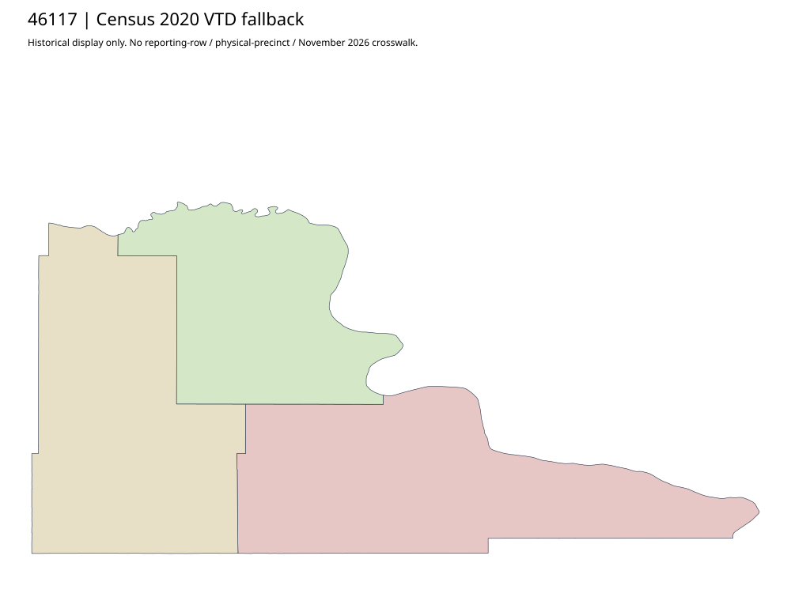

304 ordered indexStanley | 46117
Directory-listed old county hostname has transport failure. Actual official Stanley election-resolution parent and linked commissioner/precinct page acquired; its complete precinct PDF is explicitly titled PROPOSED. Neither the2012 resolution nor uploaded2026 path certifies the proposal or a current workbook join.
1 priority / 3 full historical observations. Parent is a summary ancestor, not additive to leaves. No physical feature matches or current reporting crosswalk approved.
Acquired shared-parent assets
map-46117-bd616f1e3d39 | complete1-page PDF; all-page contact sheet; complete page1; complete original gzip. Exact reconstruction: python -B scripts/reconstruct.py --id map-46117-bd616f1e3d39 /private/tmp/map.pdf
Census2020 fallback
3 native historical VTD features. Entire785-feature ZIP original retained once, all66 counties. Yankton has one countywide VTD. No current/reporting allocation. complete original gzip

Full binary/attribute/geometry QA
Observed authority/acquisition routes
Complete SOS authority fields including original blank/masked values: parent inventory. No contacts were sent.
Ordered full children
- Precinct-01 | 1542 source votes | priority
- Precinct-03 | 107 source votes | remainder
- Precinct-02 | 86 source votes | remainder